Bazaar, bakery, Balenciaga heirs and the Sunday liturgy at Sameba – a day without an itinerary, on foot through Tbilisi.
No bus, no time slot, no “we’re moving on in ten minutes”. Tbilisi works best precisely when you close the list of sights and simply walk. The city then delivers everything at once: Soviet concrete edges, grapevines over courtyards, a bakery below street level, a fashion label with a global reputation and, two streets on, a cathedral bigger than anything ever built here.
Fashion as self-assertion: The slogan is stolen – and that is exactly the point. The French label Drôle de Monsieur made “Not From Paris Madame” famous; in Tbilisi it becomes “It’s From Tbilisi”. This is more than a T-shirt gag. With Demna (Vetements, Balenciaga), Georgia has produced one of the most influential designers of the past decade, and ever since, Tbilisi has counted as an address in its own right in the fashion world – post-Soviet look, hard silhouettes, irony as a default attitude. The city knows it sits on the periphery, and turns that into a statement rather than an apology.
“Persona non grata” on the back strikes the same note: self-irony with a political double meaning, in a country that has been caught between Brussels and Moscow for years.
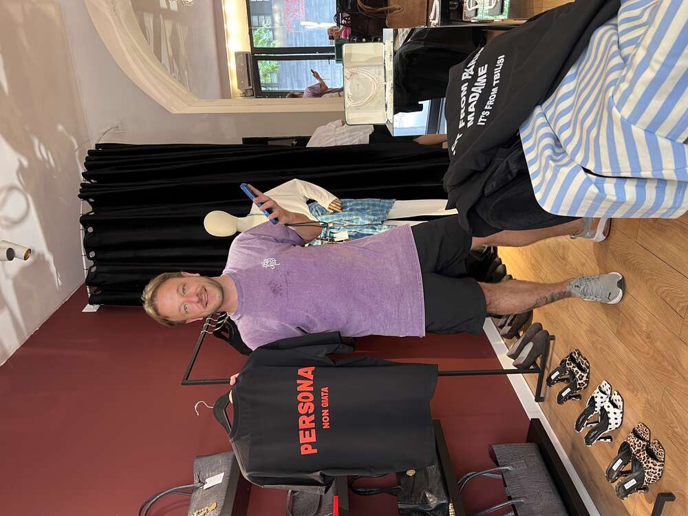
Concept store in the Old Town – the shirt made it home.
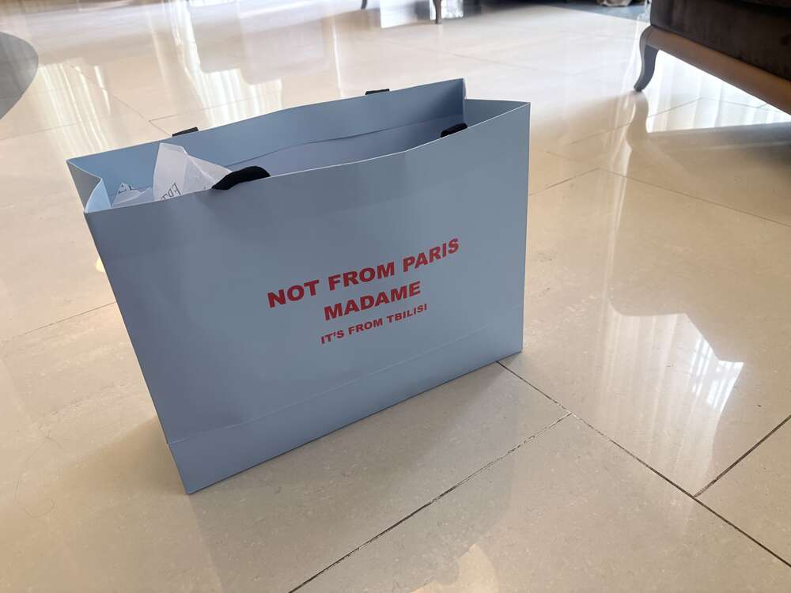
The bag as a souvenir: the entire self-assertion joke in three lines.
↗ Learn more: Demna Gvasalia and the Georgian fashion scene
A mural with a question mark: Georgian flag, EU flag, between them “Sakartvelo” – the country’s own name for itself. On the right edge someone has painted a question mark over the stars, and that is the real commentary. Georgia was granted EU candidate status in 2023; since then the relationship has cooled noticeably: the Russian-style law on “foreign influence” drove tens of thousands onto Rustaveli Avenue in 2024. Polls have consistently shown approval ratings of over 70 percent for EU accession for years – the wall says it louder than any statistic.
Half of the text on the left is sarcasm aimed at Russian-speaking newcomers, tens of thousands of whom have lived in Tbilisi since 2022. That, too, is part of this city’s picture: refuge and flashpoint at the same time.
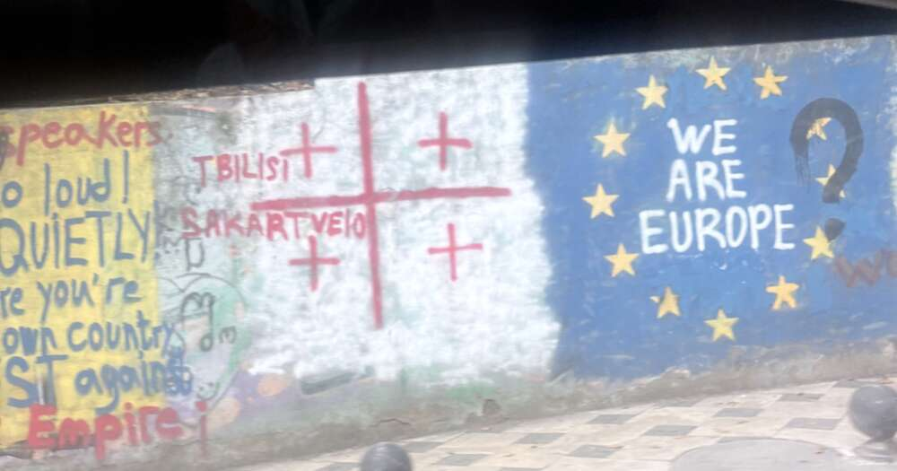
Georgian flag, EU flag, question mark – the country’s mood on a wall.
↗ Learn more: Georgia and the EU
Basic culinary rule: You hold them by the topknot (the kudi, the “tail”), bite in from the side, drink the broth, eat the rest – and put the topknot on the plate. At the end every Georgian counts the topknots: that is how you know who managed how many. Cutlery is essentially forbidden. The fork in this photo would raise eyebrows in Tusheti – in Tbilisi they turn a blind eye.
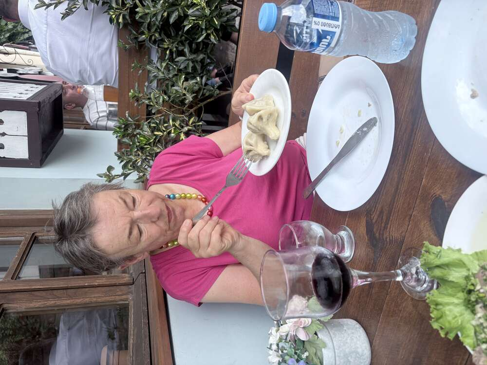
Three khinkali, a glass of Saperavi – lunch needs nothing more.
Street find: A wooden box by the roadside, carefully painted: radiation warning sign, mushroom cloud, “Georgian Atomic Energy Agency”. None of it is real – it is art in public space, a utility cabinet that someone with dry humor has redeclared a reactor facility. The joke runs deeper than it looks: RTGs – radioisotope thermoelectric generators – really were in use in the Soviet Union, and in Georgia orphaned strontium-90 sources were found several times after 1991. In 2001, three woodcutters near Lia suffered severe radiation injuries after warming themselves at night against two warm metal cylinders. The IAEA spent years cleaning up afterwards.
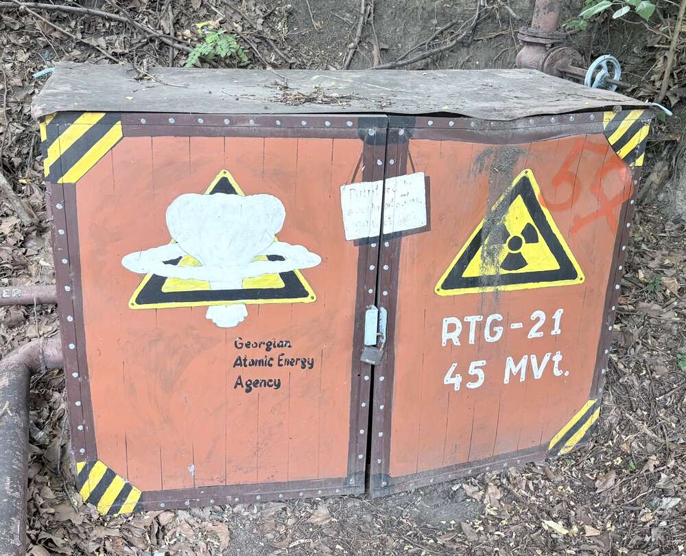
Street art with a hidden meaning – and a very real historical reference.
↗ Learn more: the Lia radiological accident (2001)
Tonis puri: Half below street level, window open, a direct view into the bakehouse. The dough is beaten, shaped and slapped against the inner wall of the tone – a cylindrical clay oven in which the bread clings upright to the wall until it comes loose. It is fished out with a hook. Shotis puri, the canoe-shaped flatbread, costs one to two lari and, eaten hot, beats every restaurant in town. You don’t buy it as a side dish, you buy it as a staple – and eat half of it on the way home.
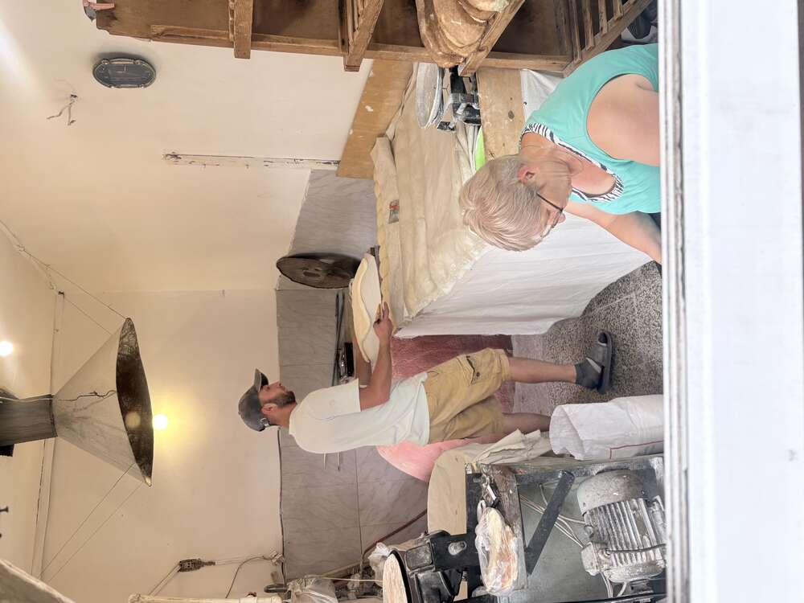
Bakehouse at eye level with the sidewalk.
↗ Learn more: shotis puri and the tone oven
Corrugated iron, watermelons, order within chaos: Between corrugated-iron roofs and stacked plastic crates runs this city’s real retail trade. Cherries, apricots, peaches, watermelons – all seasonal, all regional, all without price tags. A little further on, sponges, wooden spoons and skipping ropes hang next to coriander, garlic and tarragon.
What takes up three meters of shelving in a German supermarket is here one square meter of table and a woman who has been sitting in the same spot for thirty years. No self-service concept, no refrigerated counter – but basil you can smell from three meters away.
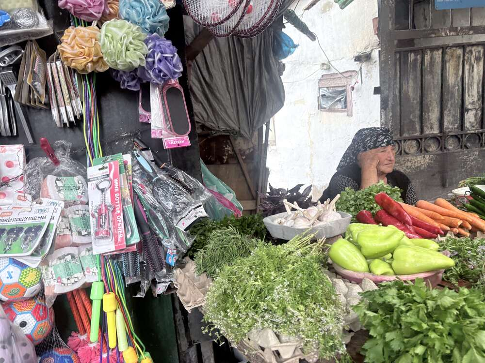
The market as an extension of the sidewalk.
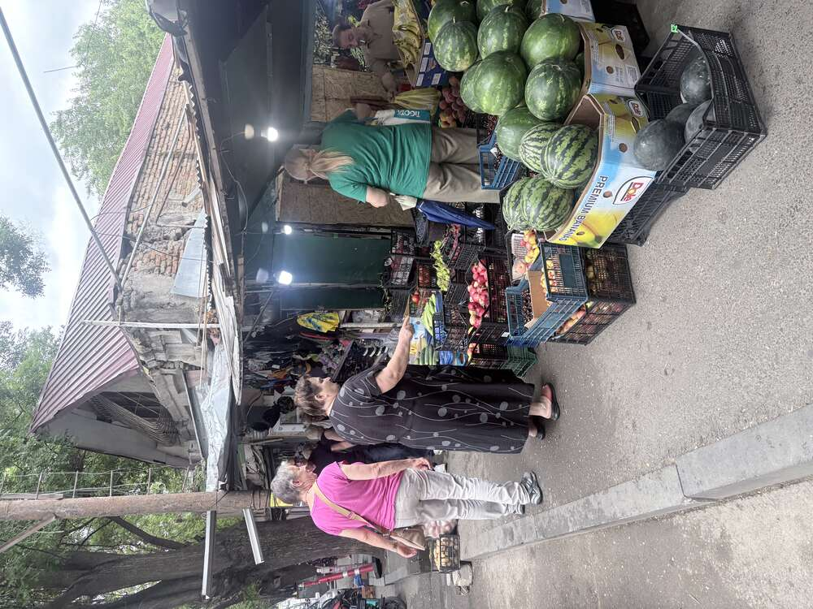
Herbs, garlic, peppers – and household goods right next to them. Product-range boundaries are negotiable here.
↗ Learn more: bazaar culture in Tbilisi
Leftover Soviet inventory: Orange, rusted through, unmoved for years, on the hood a raisin bun of cat and plastic bag – next to it a discarded office chair. The Moskvitch was the car of the Soviet middle class; in Tbilisi the last specimens stand around as flower planters, spare-parts depots for workshops or, as here, as a cat sofa. Behind it, the construction fence with a rendering: right next door, the next boutique hotel is going up. Both Georgias in one picture.
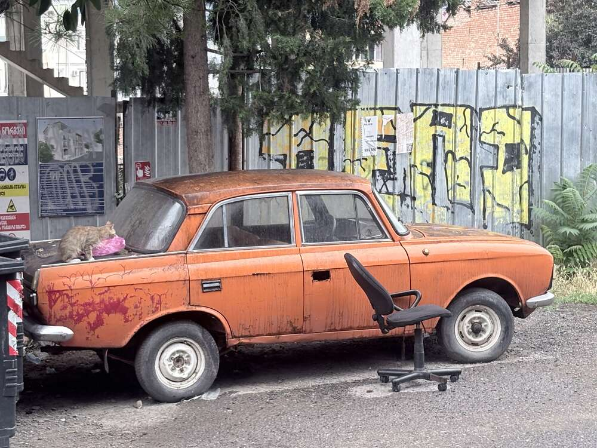
Soviet sheet metal, Georgian cat, investor brochure in the background.
Sunday liturgy: Sameba is new, and it shows: consecrated in 2004, 84 meters tall, the largest church in the South Caucasus. It was built in the years after the collapse of the Soviet Union, when Georgia had to work out for itself what it wanted to be – and the answer came back: Orthodox, sovereign, visible. Financed largely by donations, erected on a hill from which it overlooks the entire city. Not uncontroversial: the building site lay on an Armenian cemetery.
Inside, then, something no architecture critique captures: it is full. Not a museum operation, but a church service. Women in headscarves, men in everyday clothes, candles, incense, a priest in purple at the iconostasis, phone cameras in between. Georgia is among the most religious countries in Europe – the Church is by far the most trusted institution in the country, well ahead of government and parliament.
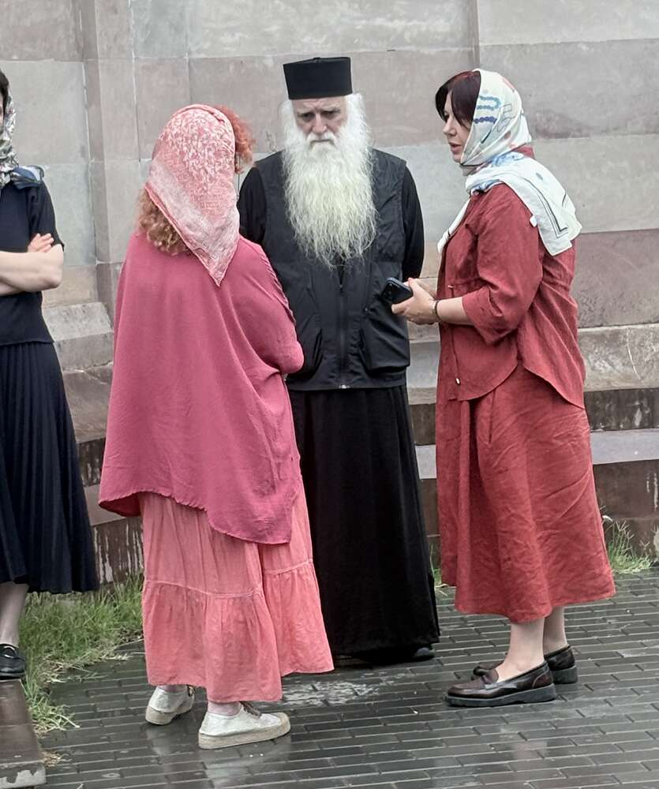
In front of the portal: conversations, not tourism.
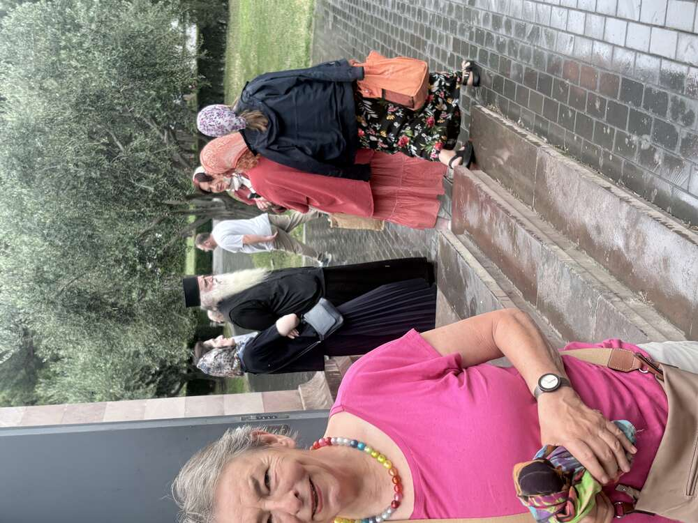
Among the olive trees of the cathedral garden, after the rain.
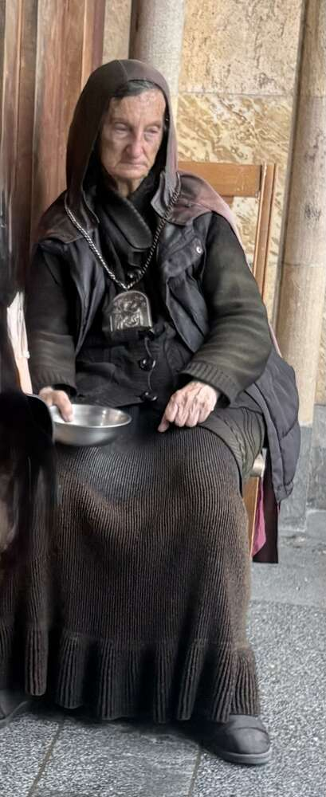
At the entrance. This too is part of the picture of a church that towers over everything.
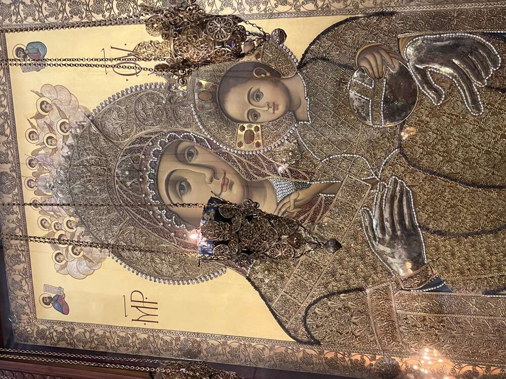
Icon of the Mother of God with silver oklad – filigree work, pearls, applied metal hands.
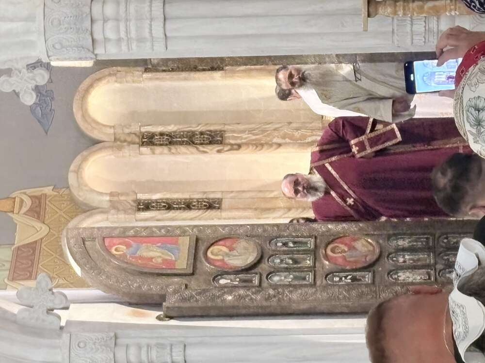
Liturgy at the iconostasis – and a phone in the foreground. Both at once, without contradiction.
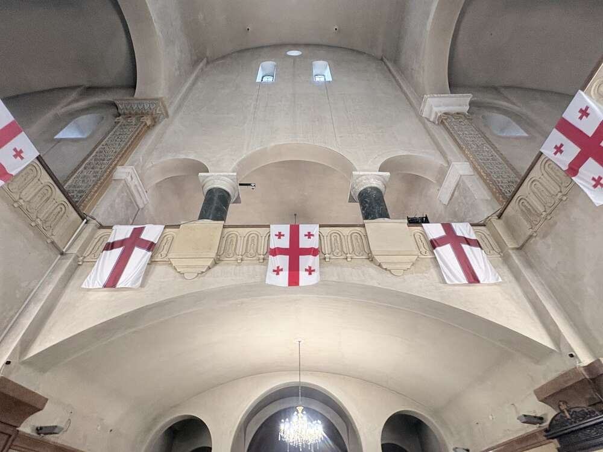
Looking up: Georgian flags in the vault – five crosses, nation and church in one symbol.
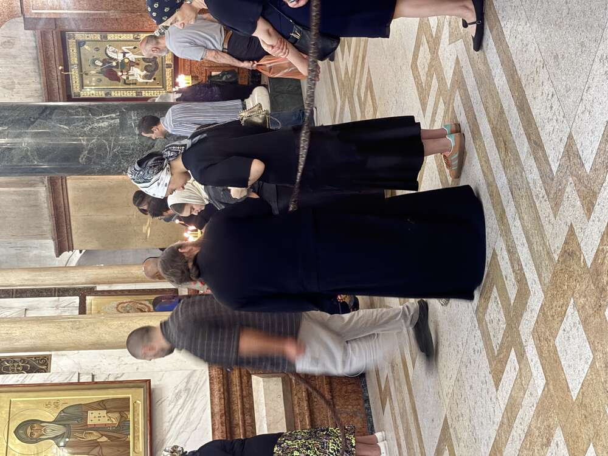
Interior: not a museum operation, but a working church.
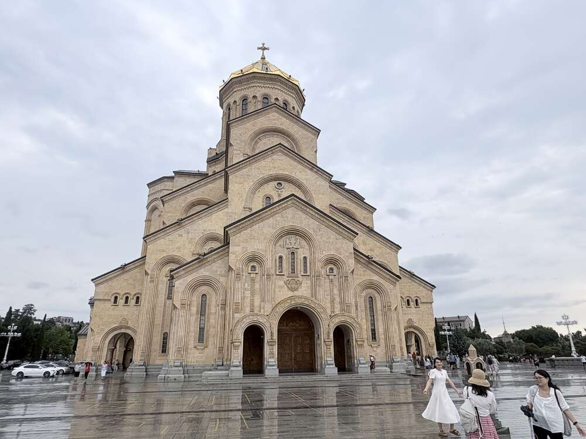
Sameba from outside – 84 meters, golden dome, wet forecourt.
↗ Learn more: Holy Trinity Cathedral (Sameba)
A day that ticked off no sights and was still the densest of the trip. Tbilisi doesn’t explain itself, it simply happens: the oven below street level, the vendor behind the coriander, the question mark over the EU stars, the incense in Sameba and a T-shirt poking fun at Paris. All within two kilometers.